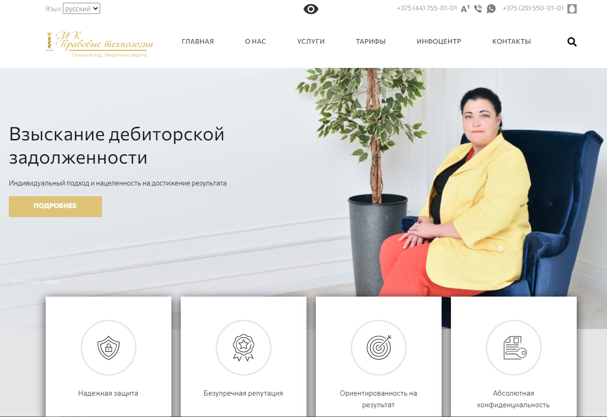

Profile:
I am responsible and hardworking junior IT person. I am able to work well. I am able to work in a team. I am able to work well under pressure and adhere to strict deadlines.
Work Experience:
2015-2020 – Freelance.
Major duties:
Furniture assembly and installation.
2013-2014 – engineer. Private company "BelRemStroiProject"
Major duties:
- Technical inspection of building structures of buildings and structures.
- Preparation of reports and conclusions on the conducted surveys.
- Performing measurement work.
Education:
2001 – 2005, Belarusian State Institute of Professional Education. Industrial and Pedagogical College.
Courses:
2019-2020, Computer Academy Step, Frontend developer
Code example
module.exports = function towelSort (matrix) { if (matrix !==undefined) { matrix.map((elem, index) =>{ if (index%2===0) return elem; else return elem.reverse(); }) return matrix.flat() } return []; }
Skills
Computer Skills
- MS Office (Word, Excel)
- Web (HTML, CSS, Javascript), code libraries
- Graphics (Photoshop, Figma, AutoCad)
Languages
- English (Basic)
- Russian (Fluent)
Strengths
- Communication Skills
- Quick learner
Hobbies
- Music (play the guitar)
- Moto Travelling
Education projects
My test job (link)
